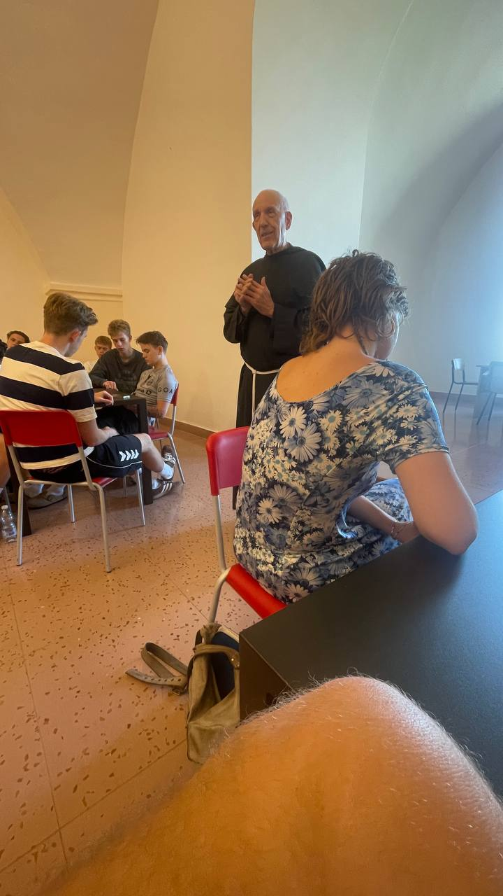
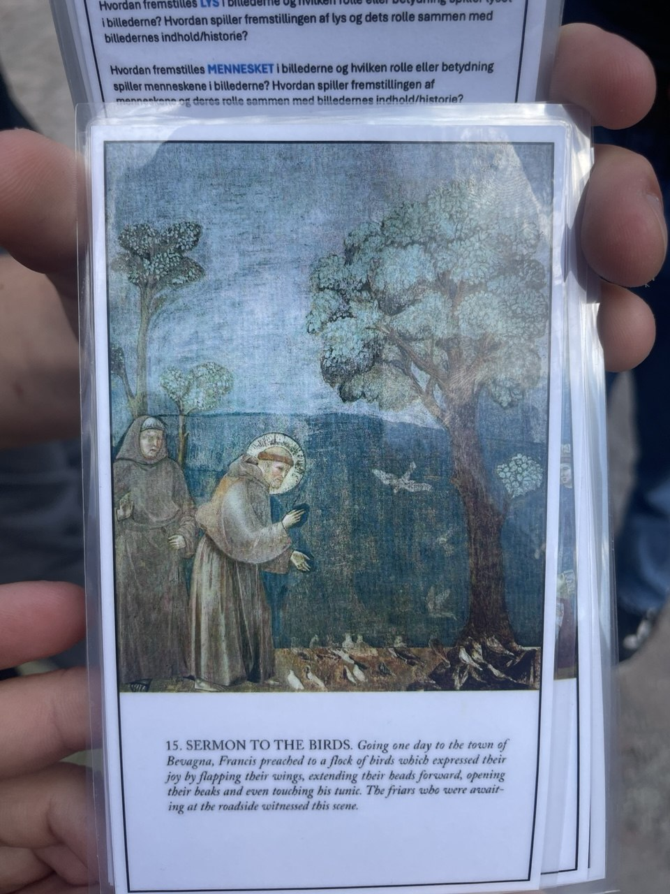
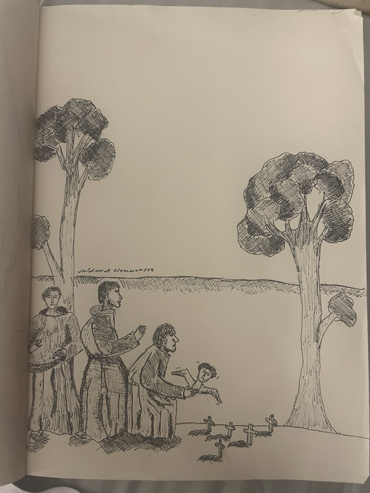

Det første vi gjorde var at gå til Basilica di San Francesco d'Assisi, hvor vi hørte broder Theodor, som fortalte om sit livs historie og om en broders pligter.

Vi gik derefter ind i den øverste del af den samme kirke og
analyserede malerierne på væggene.
Det maleri vores gruppe
valgte var følgende

Vores analyse er i stikords form, da det blot er en samling af vores
tanker:
Billeder Temaer Ydmyghed, ofring, loyalitet, velgørenhed, glæde i
døden. For at gå igennem himlens perleporte må du først give slip på
alle materielle ejendele, for at nå åndelig klarhed. Analyse 15
prædikener for fuglene Rum Simpelt, minimalt farvet, afspejlende
Frans' situation. Rummet illustrerer en blålig uidentificerbar
baggrund der fremhæver helgenens handlinger mens han beder for
fuglene omkring ham. Det er et dybt perspektiv af afstand og meget
apollonsk i sin natur på grund af dets relativt klare farveopdeling
og farvernes rolige og blålige natur. Lys Da den øverste halvdel af
den blålige baggrund har en lysere kompleksion end den nedre
halvdel, repræsenterer den lysere halvdel sandsynligvis himlen, og
præsenterer dermed den mørkere halvdel som havet eller landet.
Menneskerne Menneskerne der er præsenteret i billedet beskrives som
Frans og en broder. Begge er afbildet i simple kapper og pandebånd,
og broderen har sandaler på i tillæg. Mens broderen ser på i
ærefrygt, strækker Frans sine hænder ud til fuglene omkring ham og
beder for dem, og bøjer let sin ryg til at stå ikke som en adelsmand
men snarere som en almindelig person. Dette viser menneskerne som
medfølende, ydmyge, venlige og kærlige over for alle skabninger.
Guddommeliggørelse Præsenterer sig ikke med guld og ære, men med de
kærlige handlinger fra den almindelige person, der resulterer i
fuglenes lykke.
Vi arbejdede derefter på en kreativ repræsentation af maleriet
og dets temaer.
Den første er en tegning.

Birdsong Meditation
* Buzzing civilisation
* Faith turned temptation
* Non voglio essere qui
* Silenzio, revelation
* I want to be free
* Sit, meditation, moving a privilege
* Witness the nothingness of great silence
* Credere nei pensieri, non nelle fiere
* Silenzio, revelation
* I yearn to feel free
* Feed the birds, purpose in loss
* Far from media, expectation and silent judgement
* Fede vera rispetto al severe
* Silenzio, revelation
* I search to break free
* A spiral down a bridge from the bottom
* Loose it all to rise to the top
* Oh, ballare nel giardino delle rose
* Serenity reimagined
* I am finally free